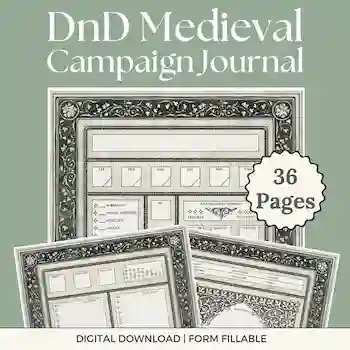

Store
Meet some of the talented artists working near Ogden. Shop Local.
Gravis Cup

Gravis cup can be found at their Etsy website and occasionally hosting clubs at the Southwest Branch of the Library
The Silver Scroll

The Silver Scroll can be found at their Etsy website and selling at the Ogden Farmers Market
Sterling Makes
Sterling Makes can be found at their Etsy website and selling at the Ogden Farmers Market
Dice Trove


The Dice Trove can be found on facebook marketplace and often hosts a booth at the Gaming Asylum in Ogden